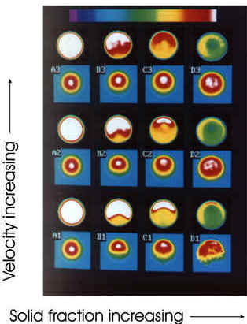

Nonhomogeneous distributions of particle concentration and axial fluid velocity for negatively buoyant suspensions flowing in horizontal tubes. Column A corresponds to pure fluid and B, C, and D to solids fractions fs=0.09, 0.23, 0.39, respectively while the rows are at increasing flow rates from the bottom. Each data set is a pair of false color images of the spatial varation of the fluid concentration ff (upper image of pair, scaled from black for no fluid to white for pure fluid) and the velocity in the plane normal to the flow direction (lower image of pair, scaled from cyan, representing zero velocity to white, representing the peak fluid velocity measured to the particular experiment). The pure oil flow data in the left column show: ff as homogeneous pure fluid with this colored annuli from edge resolution and filtering effects and <v> as concentric rings due to the parabolic velocity distribution. Going across each row notice that with increasing solids fraction (left to right) the flow becomes stratified with a region of clear fluid flowing above a highly concentrated bed. Note dilation and viscous resuspension of the concentrated solids bed as flow rate is increased (bottom to top).